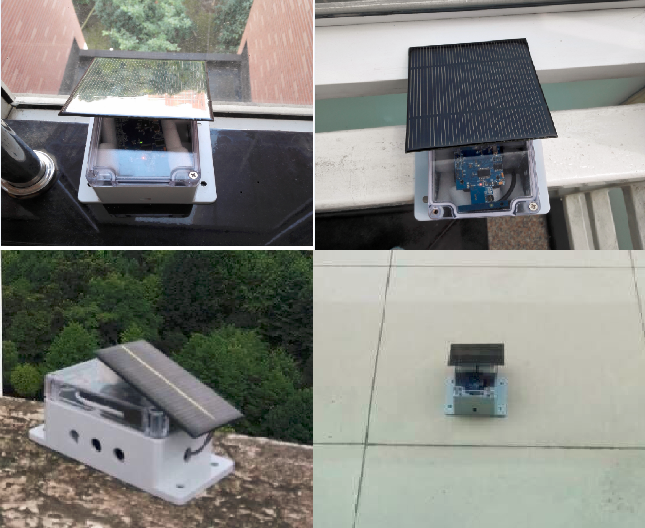
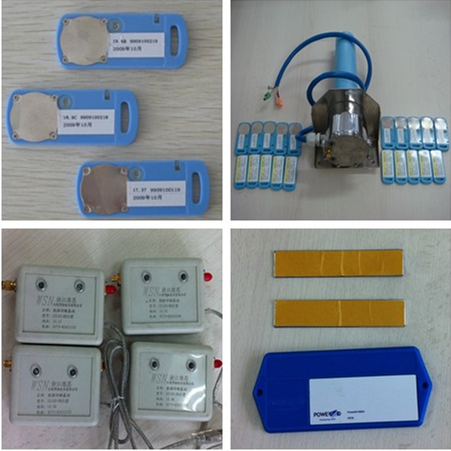
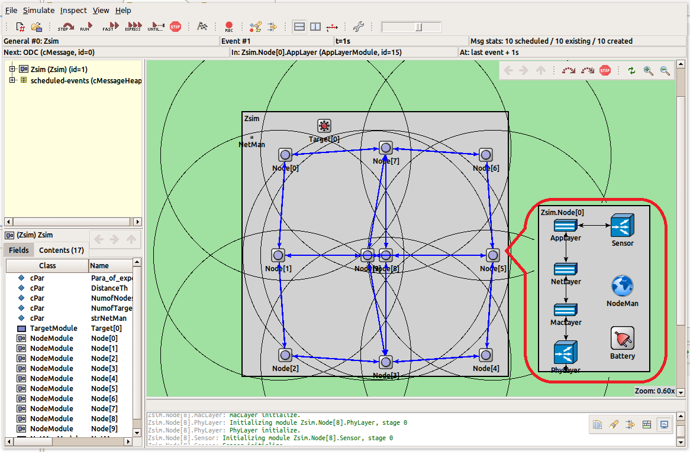

My primary research goal is to build wireless network systems for various new applications and to design new protocols for the systems. My research focuses on wireless networks, mobile crowdsourcing, Ad Hoc networks and wireless sensor networks. I am interested in solving practical problems in wireless networks by adopting mathematical tools from various fields of applied mathematics such as control theory, topology control, game theory, and machine learning.
Solar Sensor Network |
|
|  |
Solar sensor node is composed by a solar panel, a control circuit component, two rechargeble batteries and a sensor node. The solar panel can recharge the power for both batteries and power the sensor node directly. The control circuit component controls the solar panel to power which parts. The control command of circuit component control is given from the sensor node. We established a solar sensor network and found some challenging problem, which are different from the traditional wireless sensor networks. |
RFID&Camera Monitoring System |
|
|  |
Postive RFIDs are powered by a fastener battery and able to send out messages positively, unlike the passive RFID, which sends out messages only after it receives the singal of the Reader because it has not own energy recourse and should obtain the energy from the electromagnetic wave. We designed and implemented a fromework, which composes of a software subsystem and a hardware subsystem. |
Zsim |
|
|  |
Zsim is designed based on OMNeT++, a powerful network simulation environment, which can be found on the website: www.omnetpp.org. Zsim contains component modules: network and node. Several nodes can compose a network. The node module contains a protocol stack and several simple modules, such as sensor and battery, to simulate the function of hardware units. The protocol stack simulates the function of network protocols, such as IEEE 802.15.4. Zsim can be applied to simulating sensor networks, ad hoc networks and other multihop networks. |